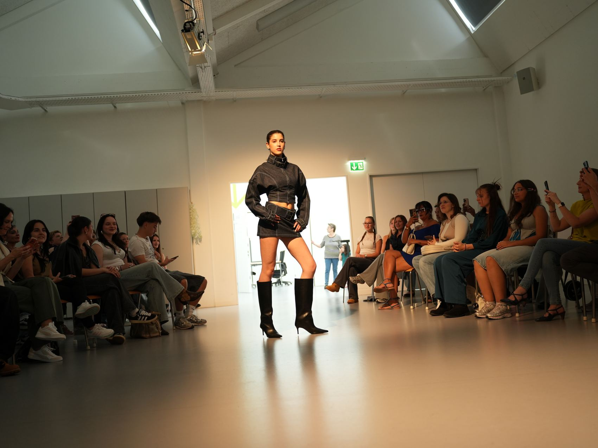
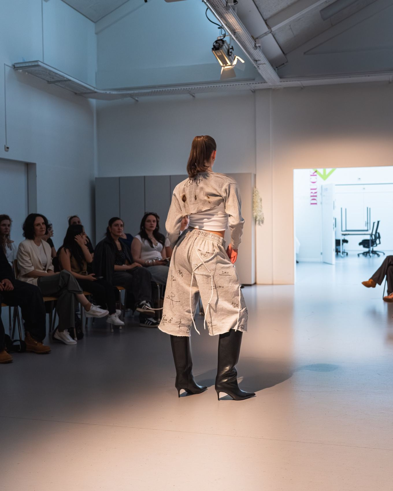
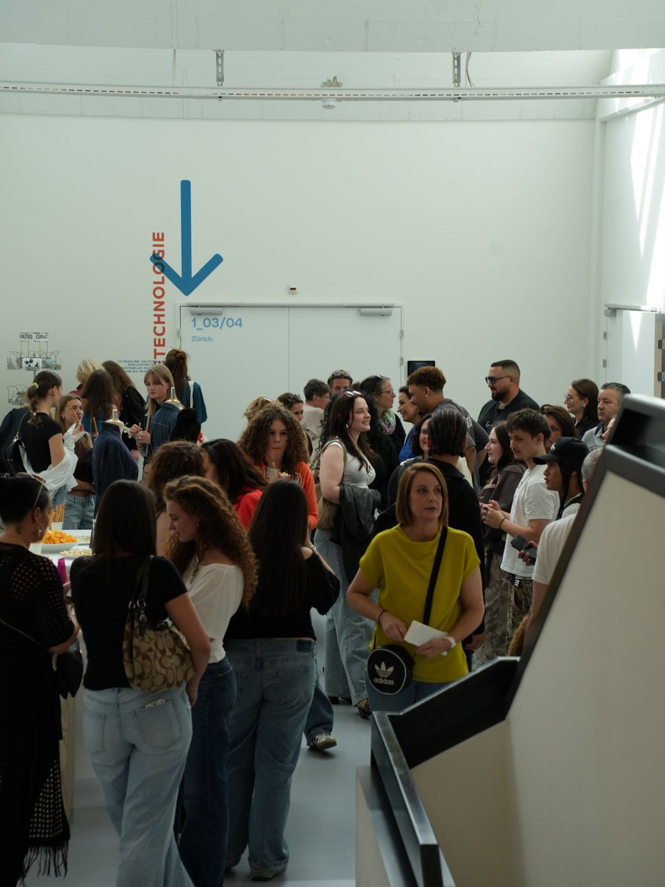

03 / DMO FASHION PLATFORM
The Next
Runway
A PLATFORM FOR EMERGING FASHION VOICES


AARAU / 2026
Not just
promises.
Founded by Diamond Owen at 17, The Next Runway gives emerging fashion designers a stage of their own. The first edition took place in Aarau in 2026. Its purpose is clear: young creatives deserve visibility, respect and real opportunities.
PARTNER WITH DMO↗